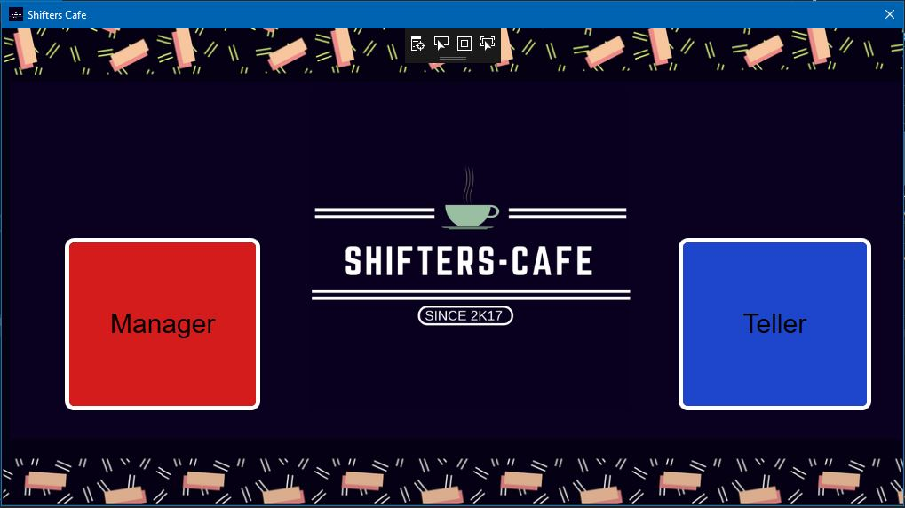
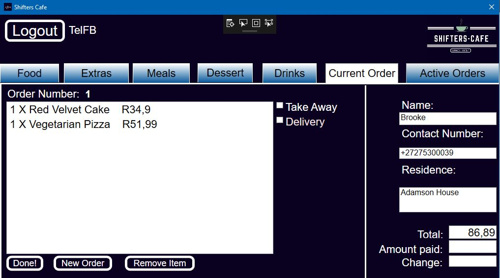

1st Year Computer Science Assignment
As a group of 4 people . We were tasked with building and implementing any system for our end fo year first year computer science project, we decided to go with a Point of Sales system. The system would consist of two portals. One for the tellers and one for the admin. The tellers would take customer orders and process these. Admins would get reports like daily sales and profits etc. We programmed the system as a WPF program with C#. I particularly enjoyed designing the user interface for the WPF program. It showed me that I can make use of design skills within the computing world and not just the code behind the scenes.
This project was very interesting and a good stepping stone for throughout the year most of our practicals consisted of problem solving, making a few methods here and there. However this time we programmed the user interface , all the classes , all the interfaces and methods. It was a great experience.